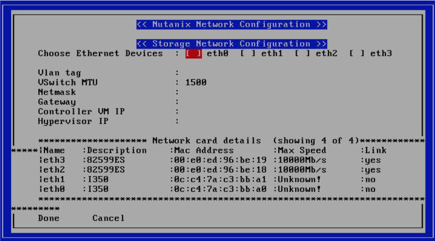

Note
Due to Covid-19, Remote Installations are now being done with the majority of our customers. This can be done in a few ways. The remote installation workflow is different but can be simplified by manually setting the node IPs. Because manually setting the node IPs covers a much broader situations we will be focusing on these stepsin the Labs. Rack and stack and setting the IPMI IPs via BIOS or ipmitool commandwill have to be done by someone ahead of timein order for you to have access to these systemsremotely.Note: Theremote installation steps are also used for node models that do not have 1Gb portsor dark sites.
Using the Crashcart network_configuration Command
In a remote install or deployment the IPMI was set ahead of time for remote access this command will now be use to set the HOST and CVM IP as well as Network settings.
Continued from the previous console we can run the following commands:
cp ~/firstboot/fc_progress.py ~/nutanix-network-crashcart/” # This file is missing in the crashcart path and has been fixed in future releases 5.16.1+
cd /root/nutanix-network-crashcart/” # change directory to crashcart folder
./network_configuration” # opens up Nutanix Network Configuration
Note the network changes available to you on this local system

For this lab let’s choose “Cancel” as the IPs are already set
You can now “exit” and close your remote console
Running Foundation from a CVM
Open a web browser to your CVM IP: http://<CVM IP:8000> use your assigned CVM’s IP
In Page 1, Start fill form with your Assigned lab Network IP settings provided and hit Next
In Page 2, Nodes section, notice that your remaining nodes are detected. As they are previously configured the IPs autofilled but normally out of factory they will require you put your desired IPs. ONLY SELECT YOUR NODE IN THIS LAB
We will be making a single node cluster. Give it a Host name of HOST-<initials>
On Page 3. Cluster page, let’s choose to Skip automatic cluster formation and give it 24GB of memory and hit Next.
Note
Only a select few models are supported in Single-node cluster in foundation we will use Skip and do this manually since we do not have any single node models in the labs.
On Page 4. AOS we will keep the default factory imaged software “we will skip AOS installation” and hit Next
On Page 5. Hypervisor same as previous step we will skip re-imaging and hit Next
On Page 6. IPMI only on bare-metal installation you would you need this step. When using the factory image we can skip this and hit Start
Explore Logs to see live scripts running from Foundation
Note
Estimated time 1-5 minutes to complete
We will now bring up your node as a single node cluster
Login to CVM again via SSH and run the following command:
cluster -s <cvm_ip> --cluster_function_list=one_node_cluster create
When completed, open a web browser to CVM IP: http://<Cluster_IP>
Use the following user name and password provided in the lab. (You may change the password to one you’d like to use)
- User: admin
- Password: Nutanix/4u
1-Click Upgrade from version of AOS
In Prism Element. Click the Gear Icon again
Choose Upgrade software
Note
This will and detect online if there is a later version of the LTS or STS version of AOS currently running in the cluster. If you want to go from change between LTS and STS you may have to up load the binaries manually. IMPORTANT: To determine the proper upgrade path from your current release to the target release, please check this link: https://portal.nutanix.com/#/page/upgradePaths
Download the required files. To manually download the software files are available on http://portal.nutanix.com
Click Upgrade then Upgrade Now
Notice you can click Close and go to tasks and watch all the detailed tasks running in the background
Install Foundation VM on your laptop (optional reference lab)
Note
This is an important lab to understand bare-metal and we run through these steps with our Remote Labs due to network accessibility. Use this lab as a reference lab. When you would need to bare-metal or image a single node you will have to use Foundation VM or Portable Foundation.
Downloading the needed Foundation & AOS:
- Open a web browser and log in to the Nutanix Support portal: http://portal.nutanix.com
- Download Foundation VM
- You will also need to download an AOS/AHV bundle
- Extract Tar (7 zip) and import
Foundation_VM-4.5.2.ovf file into VirtualBox
- Launch VM verify networking is bridged (See also Appendix files for further assistance with Oracle Virtual Box and VMware Workstation)
- Set the IP by clicking the set_foundation_ip_address Icon – use an IP within the CVM/Host network
- Use your laptop internet browser to browse to the IP set in previous step – IP on Laptop from the IP table (NOTE: Alternately You could use the icon “Nutanix Foundation” on the VM desktop but will have lower resolution and not be able to upload file from the browser from your laptop)
- Out of the factory you would see the nodes in the Discovery pane under the 2. Nodes section. If you are seeing discovered nodes you can skip the next step. However in our labs the blocks most likely were not left in an “out of factory” state and you will need to do the BareMetal steps below
- To start bare-metal steps, click “Reach more nodes by manually entering the MAC Addresses. You can get MAC from sticker on the back of each node. The other option to use the IPMI IPs can be used if you are able to set those before Foundation the server.
Note
Software Only system will come with nothing pre-installed you must to use these bare-metal steps. In the same fashion, you can not auto-discover any of your nodes if it is part of a cluster.
Install Prism Central
Note
Setup storage container RF2 all the defaults name it YOUR INITALS>-VMs
- From Prism Element Home dashboard you can choose Create new under Prism Central
- Choose to Deploy New Prism Central Instance
- Choose Download of the latest version
- Choose to Install Single-VM Prism Central and click on Deploy 1-VM PC
- Give this VM a name <YOUR INTIALS>-***PC*
- Choose the container you created VMs
- Choose VM Sizing as Small
- Give the Prism Central server an IP using your IP network first octets and use X.X.X.39 in the created native VLAN 0
- Once Prism Central server is successfully deployed (you can monitor the deployment in Home > Tasks Browse to the Prism Central IP and login
- Verify your host is registered under the Prism Central. If not you may need to register Prism Element to your Prism central server
Create an As Built Guide
Note
This is important lab after Nutanix cluster installation & configurations are completed. One of most important deliverables is the As Built Guide documentation.
Copy and Extract the “As_Built_Documenter” from the Cluster Deployment Service Kit & Choose the appropriate script for your OS:
Windows: Nutanix_Cluster_as_Built_Windows_v3.4.zip
Mac: Nutanix_Cluster_as_Built_Mac_v3.4.zip
Follow instructions from the README file and execute the binary. You will be prompted for cluster username and password.
Change to the directory where the zip file is extracted.
For Windows workstations:
generate_document.exe -c "CompanyName, Inc." -n <Nutanix cluster IP>
For Mac:
./generate_document -c "CompanyName, Inc." -n <Nutanix cluster IP>
Open the file generated and modify the highlighted areas using provide templates to complete your as built document
Note
Use your company document template if applicable – this would be if you are providing the installation service in behalf of your company